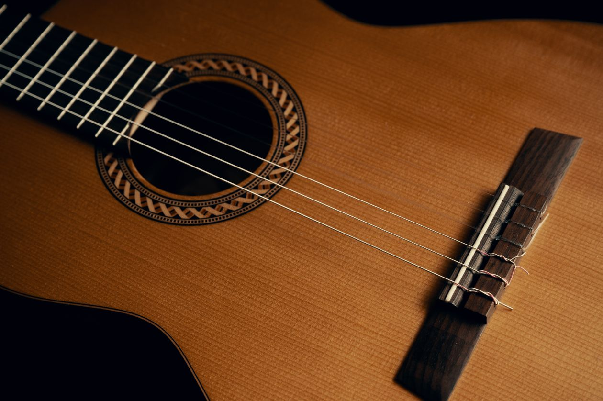

No. 41 — The Cedar OM
Commissioned 2023 · Recording guitar · Nashville, Tennessee
The brief
Daniel Reyes records acoustic guitar for other people’s records for a living. His brief was a mixing brief, not a playing one: a guitar that sits under a vocal without work — dry, fast-speaking, with no low-end bloom for the engineer to carve out afterwards. His factory OM was, in his words, “all weather, no signal.”
The decisions
Western red cedar for the top, because cedar answers at low volume from the first day and this guitar would spend its life in front of a microphone, not on a stage. The top was graduated thinner than the workshop standard — 2.3 mm at the edges — and the X-brace shifted and scalloped to shorten sustain, so notes get out of the way of the next ones. Indian rosewood stayed in the specification for depth, but the back was braced a touch stiffer than usual to keep the low end from blooming under a close microphone.
The outcome
The guitar has been Reyes’s first call for session work since delivery. It records flat, with no EQ on the way in, which was the entire brief.
“It records like a guitar that has already been mixed. Silas voiced the top down until the low end stopped fighting the microphone — I have stopped reaching for EQ on it entirely.”
— Daniel Reyes, session guitarist, Nashville
- Model
- Model O — OM body, 14-fret
- Top
- Western red cedar
- Back & sides
- Indian rosewood
- Scale
- 25.4″
- Nut width
- 1-3/4″
- Bracing
- Shifted, scalloped X
- Status
- With its owner, Nashville TN